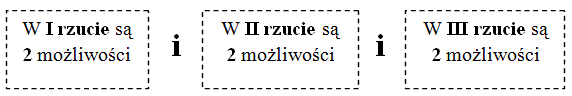

Rzucamy trzy razy monetą. Ile jest wszystkich możliwych wyników tego
doświadczenia?
Możliwe wyniki to np.: \((Orzeł,Orzeł,Reszka)\), \((O,R,R)\), \((R,O,R)\),
\((R,R,R)\)...
Zatem:
W I rzucie może wypaść orzeł lub reszka, czyli są
2 możliwości.
W II rzucie również może wypaść orzeł lub reszka, czyli są
2 możliwości.
W III rzucie również może wypaść orzeł lub reszka, czyli
są 2 możliwości.
Powiemy: 
Reguła mnożenia mówi, że w takiej sytuacji mamy: \[2\cdot 2\cdot 2=8\]
możliwości.
W regule mnożenia zawsze zamieniamy spójnik "
i" na mnożenie.